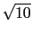
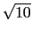

suivant: Axe radical de deux
monter: Les cercles
précédent: Le cercle exinscrit :
Table des matières
Index
Puissance d'un point par rapport à un cercle : powerpc puissance
Si un point A est à une distance d du centre d'un cercle C de rayon
r, la puissance de A par rapport au cercle C est égale à d2 - r2.
On tape :
puissance(cercle(0,1+i),3+i)
On obtient :
8
En effet : r =  et
d =  donc d2 - r2 = 8
et
d =  donc d2 - r2 = 8
Documentation de giac écrite par Renée De Graeve